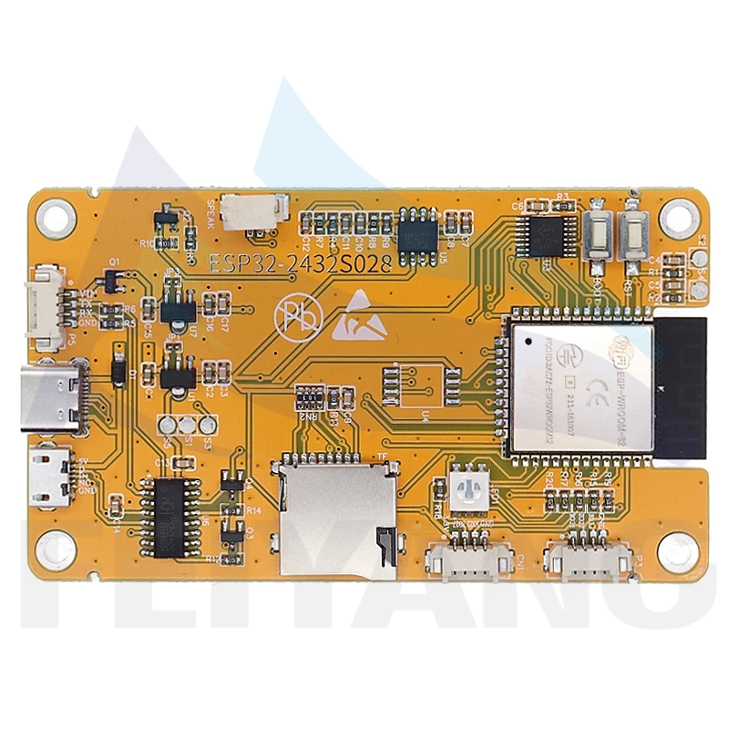
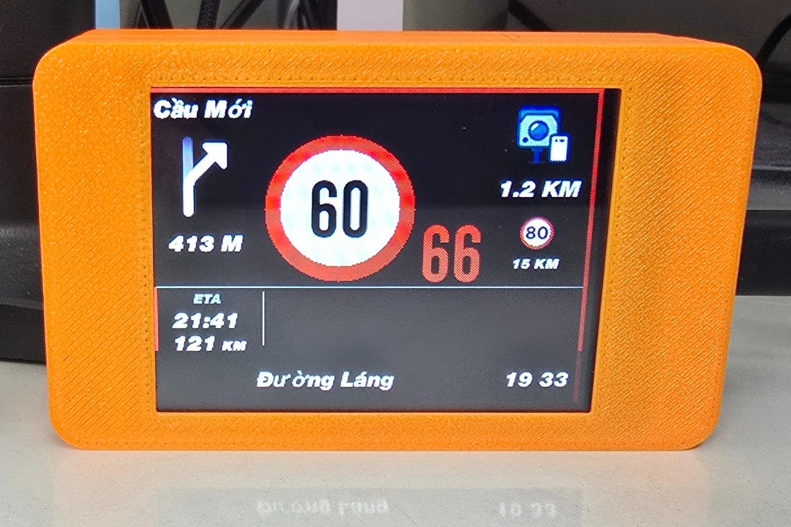
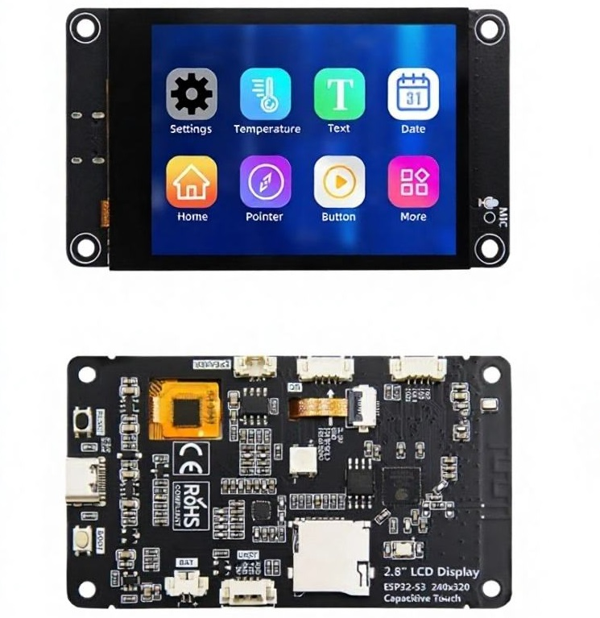
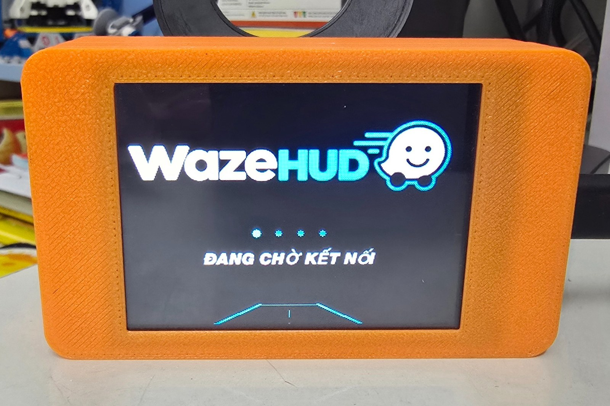
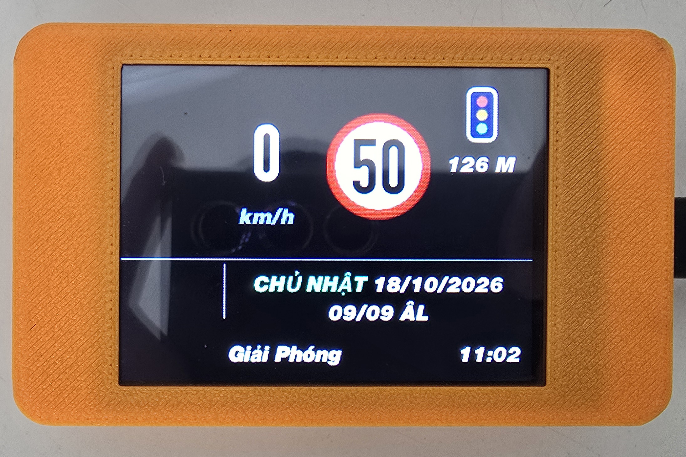
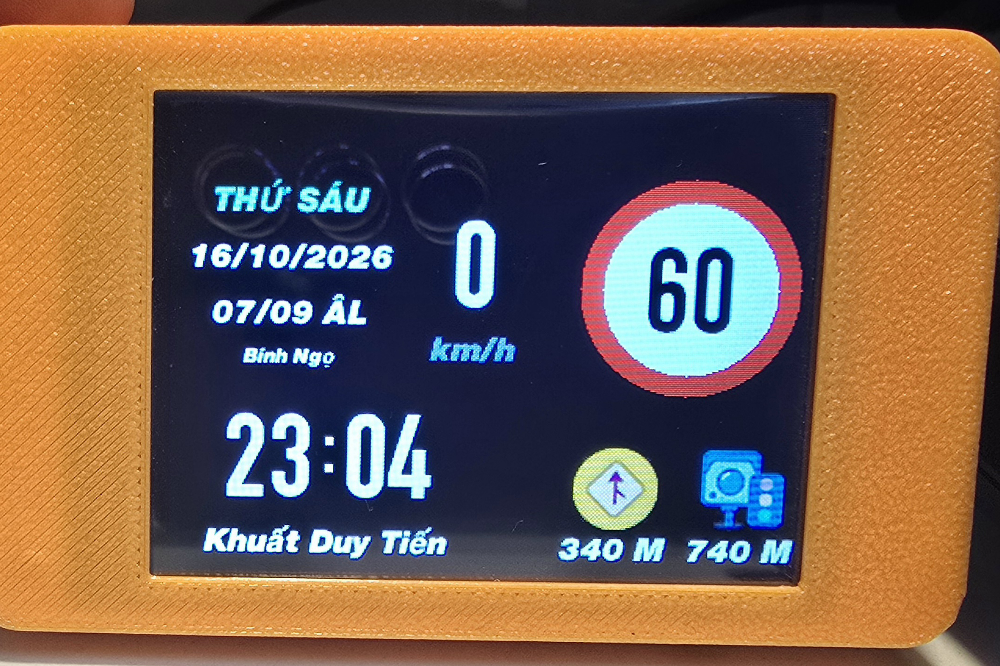
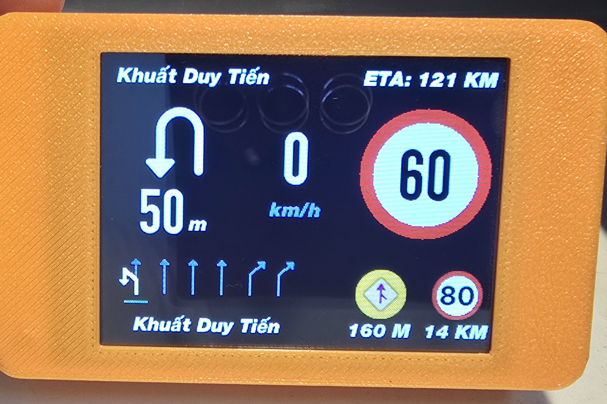
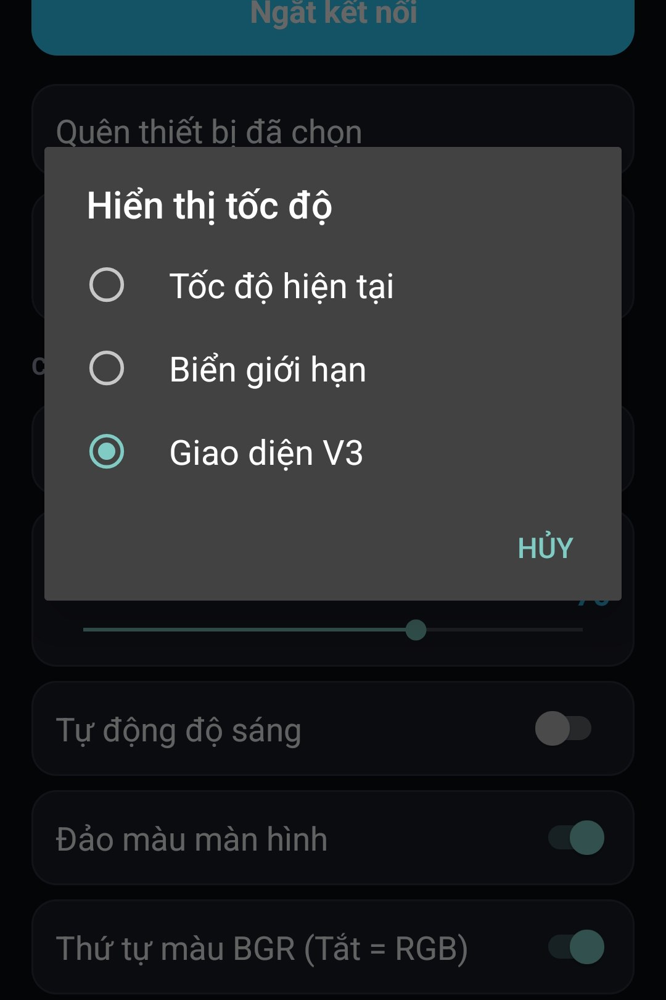

ESP32 CYD
ESP32 CYD 2.8
Phiên bản ESP32 CYD truyền thống. Chọn đúng kênh USB hoặc BLE trước khi tải hoặc nạp.
WazeHUD hỗ trợ cả ESP32 CYD 2.8 inch và phiên bản ESP32-S3 2.8 inch, biến màn hình thành HUD hiển thị hành trình trực quan — tập trung vào tốc độ, giới hạn tốc độ và chỉ dẫn rẽ.

Mỗi loại main có firmware riêng. Các nút tải và nạp được đặt ngay bên dưới hình thiết bị để dễ lựa chọn và tránh nhầm phiên bản.

Phiên bản ESP32 CYD truyền thống. Chọn đúng kênh USB hoặc BLE trước khi tải hoặc nạp.

Phiên bản sử dụng ESP32-S3. Firmware nạp mới và firmware OTA được tách riêng.
Thực hiện theo các bước dưới đây khi nạp firmware mới bằng trình duyệt.
Đối chiếu hình ảnh để xác định thiết bị là ESP32 CYD hay ESP32-S3.
Chọn đúng USB hoặc BLE. Với ESP32-S3, lần đầu phải nạp bản firmware đầy đủ, không dùng file OTA.
Dùng cáp USB có truyền dữ liệu, nhấn nút Nạp FW tương ứng và không rút cáp trong quá trình nạp. Firmware gộp được ghi từ địa chỉ 0x0.
Chờ quá trình nạp kết thúc và thiết bị khởi động lại trước khi sử dụng.
Chức năng OTA chỉ dành cho ESP32-S3 đã được nạp firmware đầy đủ từ trước.
Thiết bị phải đang chạy firmware S3 đầy đủ có dạng WazeHUD-S3-xxx-vx.x.x.bin, được nạp từ địa chỉ 0x0.
Khi có phiên bản mới, tải đúng file OTA BLE hoặc USB có dạng WazeHUD-S3-xxx-OTA-vx.x.x.bin và lưu sẵn trên điện thoại hoặc máy tính.
Khi HUD đang ở màn hình chờ kết nối và chưa kết nối với ứng dụng, chạm nhanh 5 lần vào màn hình.
Kết nối với Wi-Fi WazeHUB-S3, mật khẩu 12345678, sau đó mở trình duyệt tại 192.168.4.1.
Chọn file OTA đã tải, nhấn cập nhật và chờ thiết bị tự khởi động lại. Không tắt nguồn trong quá trình cập nhật.
-OTA- để cập nhật OTA cho ESP32-S3. Không dùng file OTA cho chức năng nạp firmware mới.Dự án phát triển nhiều kiểu bố cục HUD. Tên gọi và lựa chọn thực tế phụ thuộc phiên bản firmware bạn đang sử dụng.

Màn hình khởi động hiển thị khi thiết bị đang chờ kết nối với ứng dụng.

Giao diện dẫn đường với tốc độ hiện tại, giới hạn tốc độ, thông tin rẽ và cảnh báo phía trước.
Biển giới hạn tốc độ được làm nổi bật, đi kèm thông tin hành trình và cảnh báo.

Kết hợp Lịch âm - dương và đồng hồ lớn dễ nhận biết. luôn hiển thị tên đường và thông tin tốc độ, cảnh báo (nếu có).

Kết hợp hướng rẽ, tốc độ, biển giới hạn, tên đường và thông tin cảnh báo trong một bố cục.

Ảnh cài đặt cho thấy ba lựa chọn: Tốc độ hiện tại, Biển giới hạn và Giao diện V3. Tên gọi hiển thị có thể thay đổi theo phiên bản firmware/app.
Ảnh thiết bị và giao diện do chủ dự án cung cấp. Nội dung mô tả chỉ dựa trên các chi tiết nhìn thấy trong ảnh.
WazeHUD-CYD được phát triển và chia sẻ miễn phí. Nếu dự án hữu ích với bạn, một lời động viên hoặc một ly cà phê sẽ giúp mình có thêm động lực để tiếp tục hoàn thiện tính năng, thử nghiệm phần cứng và hỗ trợ cộng đồng.
Quét mã VietQR bằng ứng dụng ngân hàng để ủng hộ dự án. Sự ủng hộ hoàn toàn tự nguyện — bạn vẫn có thể sử dụng firmware miễn phí.